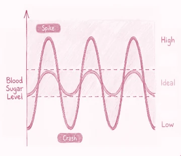

現代控糖應從單純「降糖」進階為「穩糖」，縮小血糖變異係數才能真正降低併發症
糖化血色素（HbA1c）僅反映過去 8–12 週的平均血糖，無法捕捉波峰與波谷間的劇烈震盪。兩位同樣 HbA1c 7.0% 的病人，頻繁高低血糖震盪者的氧化壓力與血管併發症風險遠高於平穩者；透過飲食順序與餐後運動等低門檻非藥物策略，即可有效降低血糖變異係數（CV）。

國際共識 CV 臨床閾值與長期回診變異警戒線
血糖變異係數（Coefficient of Variation, CV）具備計算簡易、可信度高且與低血糖風險顯著相關等優勢，已獲國際共識推薦為連續血糖監測（CGM）報告中區分血糖「穩定（stable）」與「不穩定（labile）」的核心指標。
為何高波動比持續高血糖更具破壞力？
相較於持續性的慢性高血糖，劇烈的血糖波動更能誘發血管內皮細胞產生嚴重的氧化壓力（oxidative stress）、慢性發炎、內皮功能障礙（endothelial dysfunction）與表觀遺傳修飾（epigenetic modifications），這些分子機制共同為糖尿病併發症建立難以逆轉的「代謝記憶」（metabolic memory）。
- 大小血管併發症：高血糖波動（GV）與小血管病變（腎病變、視網膜病變、周邊神經病變）及大血管病變（中風、冠狀動脈疾病）風險增加均有顯著關聯。
- β 細胞惡性循環：胰臟 β 細胞功能受損導致血糖不穩定，而劇烈波動反過來進一步加速 β 細胞惡化。
- 低血糖與反彈性高血糖：高 CV 與低血糖風險高度相關；低血糖後反調節荷爾蒙分泌引發反彈性高血糖（Somogyi effect），成為 CV 居高不下的主因。
降低 CV 的實證非藥物策略：飲食、運動與作息規律
對基層醫療而言，降低 CV 不必完全依賴昂貴科技或複雜藥物；充分運用低成本、執行門檻低的生活型態介入，即可立竿見影地平抑餐後高峰並穩定全日血糖曲線。
| 介入領域 | 具體執行策略 | 臨床實證效益與機轉 |
|---|---|---|
| 飲食：進食順序 | 先攝取蛋白質或蔬菜，最後攝取碳水化合物 | 無需大幅更動飲食內容，即可顯著抑制餐後血糖波動幅度並降低整體 CV。 |
| 飲食：碳水之「質」 | 優先選擇低升糖指數（Low GI）食物 | 緩和急遽的餐後血糖反應，降低血糖變異性。 |
| 飲食：碳水之「量」 | 採取低碳水化合物飲食；特別限制「早餐」碳水攝取 | 延長血糖在正常範圍時間（Time in Range）、減少低血糖；僅限制早餐碳水即足以減少整日餐後高血糖暴露。 |
| 飲食：進食規律性 | 維持穩定、可預測的用餐時間 | 避免生理時鐘與胰島素分泌節律錯配，減少日間血糖變異（day-to-day variability）。 |
| 運動：時機與抗久坐 | 餐後運動優於空腹（尤以早餐後中等強度運動佳）；久坐族群每 15 分鐘進行 3 分鐘輕度步行 | 顯著縮減日間血糖波動幅度；定期中斷久坐更可有效改善夜間血糖變異性。 |
| 運動：多元類型 | 有氧、阻力、混合運動皆有效；短期間歇性步行訓練、高強度間歇（HIIT）、中等強度連續訓練及吸氣肌訓練 | 顯著降低 GV 與氧化壓力；間歇性步行改善 CGM 所測 GV 可能優於連續步行；HIIT 與連續訓練減輕內皮損傷效果相近。 |
| 生活：睡眠與作息 | 維持規律睡眠時間表，避免平日與週末作息劇烈落差 | 減少週間作息變動引發的日間血糖變異（between-day variability）。 |
基層診所監測工具彈性選擇與衛教溝通技巧
| 監測工具 | 評估指標與方法 | 基層實務定位 |
|---|---|---|
| 連續血糖監測 (CGM) | 直接判讀報告中之 CV(%) 與 Time in Range | 國際共識標準工具，最完整呈現全日波峰波谷；受限於成本與普及率。 |
| 自我血糖監測 (SMBG) | 利用多點指尖血計算標準差（SD） | 無 CGM 時的彈性替代方案，可用於評估短期血糖波動。 |
| 歷次 HbA1c 追蹤 | 回顧病歷計算回診間變異度（visit-to-visit variability） | 最經濟之長期評估方式；若 HbA1c CV > 5% 即納入高風險族群。 |
衛教溝通：破除「血糖越低越好」迷思
協助病人將目標從單純「降糖（lowering glucose）」轉向「穩糖（stabilizing glucose）」。清楚解釋 HbA1c 僅為三個月平均，若為了追求漂亮數字而頻繁發生低血糖，反而得不償失。
低血糖早期辨識：阻斷 Somogyi 惡性循環
教導病人辨識低血糖早期症狀，不僅關乎安全，更是防止低血糖後引發反彈性高血糖（Somogyi effect）導致 CV 失控的關鍵。臨床應強調 CV < 36% 為安全穩定線，< 27% 可大幅減少低血糖風險。
現代控糖新準則
未來糖尿病照護應超越單純以 HbA1c 達標作為指標，更應致力於讓病人的血糖曲線達成「平穩（flat）、安全（safe）、達標（in range）」的理想狀態。
主要參考資料
- Wen X, et al. Factors that determine glucose variability, defined by CV in CGM, in a Chinese population with T2DM. Diabetes Obes Metab 2024; 26: 611-21.
- Kovatchev B. Glycemic variability: risk factors, assessment, and control. J Diabetes Sci Technol 2019; 13: 627-35.
- Zhou Z, et al. Glycemic variability: adverse clinical outcomes and how to improve it? Cardiovasc Diabetol 2020; 19: 102.
- Ceriello A, Monnier L, Owens D. Glycaemic variability in diabetes: clinical and therapeutic implications. Lancet Diabetes Endocrinol 2019; 7: 221-30.
- Monnier L, et al. Key indices of glycaemic variability for application in diabetes clinical practice. Diabetes Metab 2023; 49: 101488.
- Monnier LO, et al. Glycaemic variabilities: key questions in pursuit of clarity. Diabetes Metab 2021; 47: 101283.
- Klimontov VV, et al. Glucose variability: how does it work? Int J Mol Sci 2021; 22: 7783.
- Zhou JJ, et al. Fasting glucose variation predicts microvascular risk in ACCORD and VADT. J Clin Endocrinol Metab 2021; 106: 1150-62.
- Scott ES, et al. Long-term glycemic variability and vascular complications in T2DM: FIELD study. J Clin Endocrinol Metab 2020; 105: dgaa361.
- Rodbard D. Glucose variability: a review of clinical applications and research developments. Diabetes Technol Ther 2018; 20: S25-215.